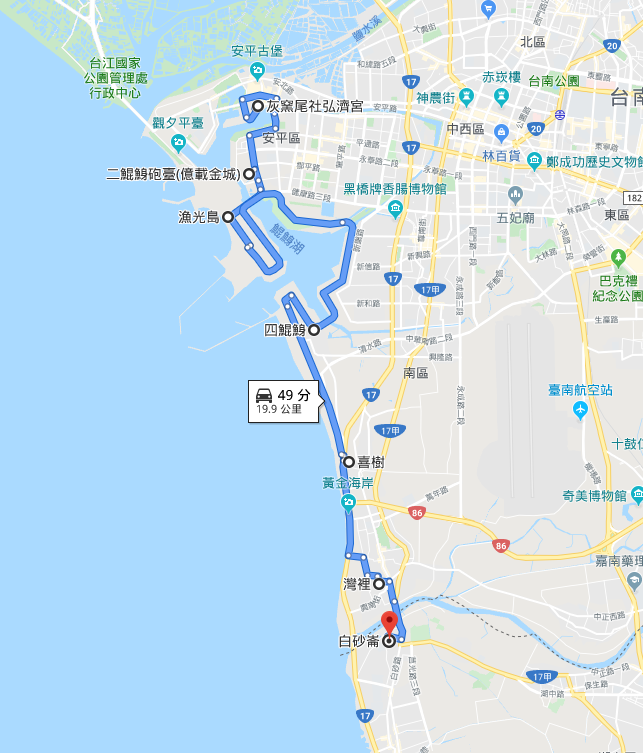
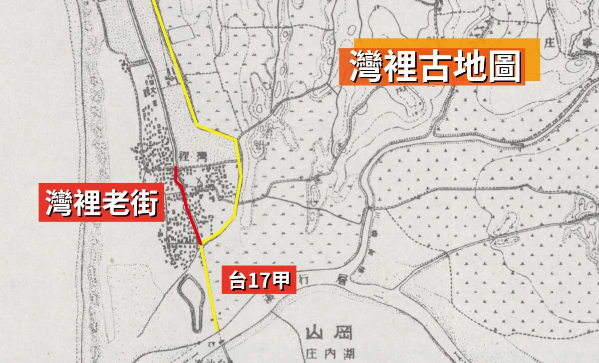
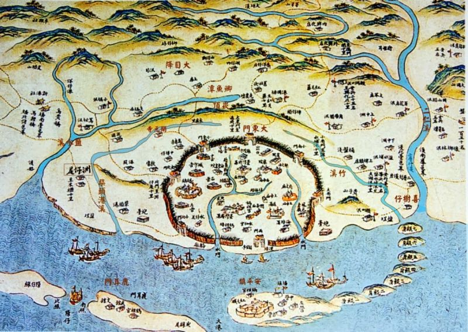
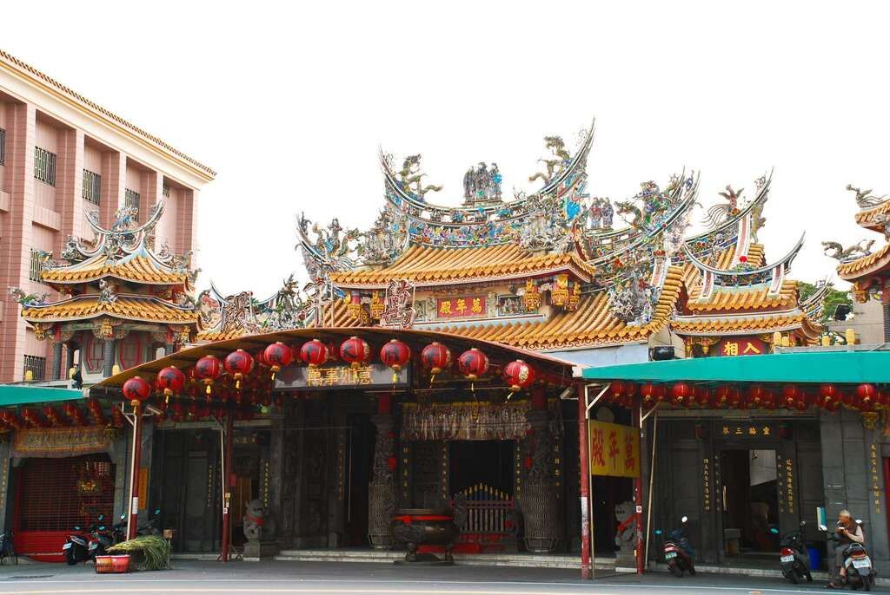
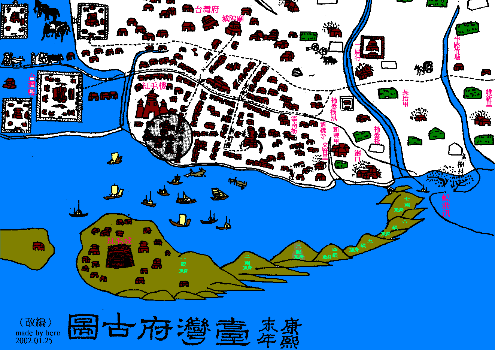

<ion-header>
  <ion-toolbar style="background: 0cea89;">
    <ion-buttons slot="end">
      <ion-menu-button></ion-menu-button>
    </ion-buttons>
    <ion-title>
      歷史介紹
    </ion-title>
  </ion-toolbar>
</ion-header>

<ion-content padding>


  <ion-card>
    
    <ion-card-header>
      <ion-card-title>七鯤鯓</ion-card-title>
    </ion-card-header>
    <ion-card-content>
      事實上，七鯤鯓涵蓋範圍超過台南市南區，一鯤鯓為灰窯尾，而今日安平古聚落則位於上鯤鯓，兩者合併為安平全島。而二鯤鯓為今天安平國中到億載金城一帶；三鯤鯓在現今億載金城南邊對岸處，安平新港之北，已與漁光島相連為一島嶼；四鯤鯓就是現在的下鯤鯓，今天也單稱「鯤鯓」；五鯤鯓為現在臺南市的喜樹地區，而六鯤鯓則為現在的灣裡，七鯤鯓則是現在的高雄市茄萣區白沙崙。（由於文獻不足，也有一說六鯤鯓是現在的喜樹、七鯤鯓是現在的灣裡）（資料來源：wiki_南區鯤鯓）
      <br>
      其中，台南市南區包含四鯤鯓、喜樹、灣裡。
    </ion-card-content>
  </ion-card>
  <div class="status">
    <ion-card>
      <div class="timeline">
        <div>
          已收货
          <ion-label>
            <h5>您的包裹安全地交给您。</h5>
          </ion-label>
        </div>
        <div>
          待交货
          <ion-label>
            <h5>我们正在尝试交货与您。</h5>
          </ion-label>
        </div>
        <div>
          已付款
          <ion-label>
            <h5>我们已收到您的付款。</h5>
          </ion-label>
        </div>
        <div>
          待付款
          <ion-label>
            <h5>我們正在等待您的付款。</h5>
          </ion-label>
        </div>
        <div>
          待打包
          <ion-label>
            <h5>我们正在处理您的包裹。</h5>
          </ion-label>
        </div>
        <div class="{{warehouse}}">
          抵达仓库
          <ion-label>
            <h5>您的包裹已抵达物流设施。</h5>
            <h4>{{warehousetime}}</h4>
          </ion-label>
        </div>
        <div class="last">
          待确认
          <ion-label>
            <h5>我們已收到您的訂單。</h5>
            <h4>{{preordertime}}</h4>
          </ion-label>
        </div>
      </div>

    </ion-card>
  </div>
  <!-- <ion-card>
    
    <ion-card-header>
      <ion-card-title>灣裡的自然環境</ion-card-title>
    </ion-card-header>
    <ion-card-content>
      灣裡社區位於台南市南區最南端，東以三爺宮溪和台南縣仁德鄉隔界（三宮爺溪南流注入二仁溪），西臨台灣海峽，南 以二仁溪接高雄縣 茄萣鄉白沙崙村，北則臨台南市喜樹社區。

      灣裡東側較高。灣裡以西地勢逐漸向海低降，大致上，整體地形非常平坦。東側的由於鹽分較少，目 前是灣裡的農業生產區。

      近海濱處，由於是新生的海埔新生地， 鹽分較高不適合農作。灣裡的北側地勢稍微低平，加上是海埔新生地，所以以往屬於台南鹽場的一部份。
      大約在現今明興路以西，二仁溪以北，灣裡菜市場以南，及漁塭帶以東，以「灣裡路」為中心的街道帶是灣裡社區的中心。灣裡社區中心房子多數老舊，新興的住宅區則沿著中心外圍增建，房屋較新，且「灣裡社區」外圍道路如：明興路、興南街、濱海公路台17線..等都較灣裡路為寬闊平坦。社區中心外圍的道路或房屋大約都是在廢五金興盛
    </ion-card-content>
  </ion-card>


  <ion-card>
    
    <ion-card-header>
      <ion-card-title>灣裡的歷史</ion-card-title>
    </ion-card-header>
    <ion-card-content>

      灣裡曾是台江內海的七鯤魚身，後來由於二仁溪攜入大量泥沙 ，便連成陸地。灣裡地區的民眾解釋「灣裡位於一個大海灣內，故名灣裡」。鄭成功遷台，灣裡漢人的祖先－葉、林、杜、蘇、黃， 便在此定居，
      劃分為永寧里。據灣裡地區萬年殿廟碑之記載及當地耆老表示 祖先隨鄭成功過來臺灣，為鄭氏軍隊中的將軍，遷居灣裡。隨著日治到民國，灣裡地區曾一時興盛廢五金，提供臺灣工業起飛期不少急需的資源 ，也為這個地方吸引並留住大量的人口。
    </ion-card-content>
  </ion-card>


  <ion-card>
    
    <ion-card-header>
      <ion-card-title>灣裡的宗教</ion-card-title>
    </ion-card-header>
    <ion-card-content>
      如果不是萬年殿廟碑的紀錄，你一定不明白為什麼灣裡和鄰近的喜樹地區在清代常發生械鬥的原因。灣裡人的一生，和當地的宗教生活是緊密結合的。大廟-萬年殿從五大姓遷入、歷經日治、五金時代到現代，都深深的、緊緊的團聚了九個里的居民。角頭廟分布在外圍，有家鄉神的同安宮、馬鎮宮，以及位在二仁溪出海口，生活環境最具沼氣的佛壇里的超峰寺。這些廟各據一角，也扮演著舉足輕重的角色。這就是灣裡。
    </ion-card-content>
  </ion-card>
  <ion-card>
    
    <ion-card-header>
      <ion-card-title>灣裡的民居生活</ion-card-title>
    </ion-card-header>
    <ion-card-content>
      早期的灣裡人主要是從事農漁業，最明顯的是：同安里、興農里因為位在比較內陸，所以大多數以農業為主。而其它里別中有些人有田地在台南空軍基地下，所以也有從事農業。但大部分因為位在海邊，所以像南山里就是純粹的捕魚生活。灣裡人的生活大概只求勉強維持生活，自給字足。一直持續到廢五金正式進入灣裡以後，灣裡的經濟才真正獲得改善。並且大部分都是以姓氏為主住在一起，等到住不下了，再遷到外圍的興農里、中和里、省躬里和佛壇里。
    </ion-card-content>
  </ion-card> -->
</ion-content>